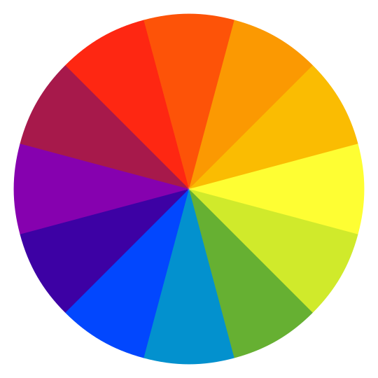

Achieving Distributed Coordination with Neural Cellular Automata
Click or tap and drag to draw shapes in the canvas.
Select different digits to load digits from the training set. Click again to get a different sample of the same digit. Press the bin to clear the canvas.
Speed:
( step/s)
Brush size:
(2.5 px)

Palette:
(0 deg)
This article relies on using color to demonstrate classification label. If you have trouble distinguishing the colours of digits in the above legend, please try and adjust the slider above to see if there is an alternative colour palette for you. The chosen palette will propagate throughout the article.
Growing Neural Cellular Automata demonstrated how simple cellular automata (CAs) can learn to self-organise into complex shapes while being resistant to perturbations. Such a computational model approximates a solution to an open question in biology, namely, how do cells cooperate to create a complex multicellular anatomy and work to regenerate it upon damage? The model parameterizing the cells’ rules is parameter-efficient, end-to-end differentiable, and illustrates a new approach to modeling the regulation of anatomical homeostasis. In this work we use this model to show how CAs can be applied to a common task in machine learning: classification. We pose the question: can CAs use local message passing to achieve global agreement on what digit they compose?
Our question is closely related to another unsolved problem in cell and developmental biology: anatomical surveillance and the ability to decide whether a pattern is correct or whether cells need to remodel the current anatomy. For example, a salamander tail surgically transplanted to the flank slowly remodels to a limb - the organ that belongs at this location . Similarly, tadpoles with craniofacial organs in the wrong positions become normal frogs because they remodel their face to place the eye, mouth, nostrils, etc. in their correct locations . All of these examples illustrate the ability of biological systems to determine their current anatomical structure and decide whether it matches a species-specific target morphology . Despite the recent progress in molecular biology of genes required for this process, it is now essential to develop a computational understanding of candidate algorithms sufficient for cell collectives to measure and classify their own large-scale morphology. More broadly, it is important to create computational models of swarm intelligence that make explicit and distinguish the dynamics of basal cognition of single cells vs. cell collectives .
Self-classifying MNIST task
Suppose a population of agents are arranged in a grid. They do not know where they are in the grid, and they can only communicate with their immediate neighbors. They can also observe whether a neighbor is missing. Now suppose these agents are arranged to form a large digit. Given that all the agents operate under the same rules, can they form a communication protocol such that, after a number of iterations of communication, all of the agents know which digit they are forming?
Furthermore, if some agents were to be removed and added to form a new digit from a preexisting one, would they be able to know which the new digit is?
Because digits are not rotationally invariant (i.e. 6 is a rotation of 9), we presume the agents must be made aware of their orientation with respect to the grid. Therefore, while they do not know where they are, they know where up, down, left and right are. The biological analogy here is a situation where the remodeling structures exist in the context of a larger body and a set of morphogen gradients or tissue polarity that indicate directional information with respect to the three major body axes.
We introduce the self-classifying MNIST task.
A visualisation of a random sample of digits from MNIST, each shaded by the colour corresponding its label.
Each sample of the MNIST dataset consists of a 28x28 image with a single monochrome channel that is classically displayed in greyscale. The label is an integer in $[0,9]$.
Our goal is for all cells that make up the digit to correctly output the label of the digit. To convey this structural information to the cells, we make a distinction between alive and dead cells by rescaling the values of the image to [0, 1]. Then we treat a cell as alive if its value in the MNIST sample is larger than 0.1. The intuition here is that we are placing living cells in a cookie cutter and asking them to identify the global shape of the cookie cutter. We visualize the label output by assigning a color to each cell, as you can see above. We use the same mapping between colors and labels throughout the article. Please note that there is a slider in the interactive demo controls which you can use to adjust the color palette if you have trouble differentiating between the default colors.
Model
In this article, we use a variant of the neural cellular automata model described in Growing Cellular Automata . We refer readers unfamiliar with its implementation, to the original ”Model” section. Here we will describe a few areas where our model diverges from the original.
Target labels
The work in Growing CA used RGB images as targets, and optimized the first three state channels to approximate those images. For our experiments, we treat the last ten channels of our cells as a pseudo-distribution over each possible label (digit). During inference, we simply pick the label corresponding to the channel with the highest output value.
Alive cells and cell states
In Growing CA we assigned the cell's state to be “dead” or “alive” based on the strength of its alpha channel and the activity of its neighbors, in a manner similar to the rules of the Game of Life. In details for the Growing CA model, “alive” cells are cells which update their state and dead cells are “frozen” and do not undergo updates. In contrast to biological life, what we call “dead” cells aren’t dead in the sense of being non-existent or decayed, but rather frozen: they are visible to their neighbors and maintain their state throughout the simulation. In this work, meanwhile, we use input pixel values to determine whether cells are alive or dead and perform computations with alive cells only As introduced in the previous section, cells are considered alive if their normalized grey value is larger than 0.1.. It is important to note that the values of MNIST pixels are exposed to the cell update rule as an immutable channel of the cell state. In other words, we make cells aware of their own pixel intensities as well as those of their neighbors. Given 19 mutable cell state channels (nine general purpose state channels for communication and ten output state channels for digit classification) and an immutable pixel channel, each cell perceives 19 + 1 state channels and only outputs state updates for the 19 mutable state channels.
A note on digit topology. Keen readers may notice that our model requires each digit to be a single connected component in order for classification to be possible, since any disconnected components will be unable to propagate information between themselves. We made this design decision in order to stay true to our core biological analogy, which involves a group of cells that is trying to identify its global shape. The vast majority of samples from MNIST are fully connected. But some aren’t. We do not expect our models to classify non-connected minor components correctly, but we do not remove them This choice complicates comparison between the MNIST train/test accuracies of neural network classifiers vs. CAs. However, such a comparison is not in scope of this article..
Perception
The Growing CA article made use of fixed 3x3 convolutions with Sobel filters to estimate the gradient of state in x and y. We found that fully trainable 3x3 kernels outperformed their fixed counterparts and so used trainable kernels in this work.
A note on model size. Like the Growing CA model, our MNIST CA is small by the standards of deep learning - it has less than 25k parameters. In this work, we are interested in demonstrating a novel approach to classification. We do not attempt to maximise the validation accuracy of the model by increasing the number of parameters or any other tuning. We suspect that, as with other deep neural network models, one would observe a positive correlation between accuracy and model size.
Experiment 1: Self-classify, persist and mutate
For our first experiment, we use the same training paradigm as was discussed in Growing CA. We train with a pool of initial samples to allow the model to learn to persist and then perturb the converged states. However, our perturbation is different. Previously, we destroyed the states of cells at random in order to make the CAs resistant to destructive perturbations (analogous to traumatic tissue loss).
In this context, perturbation has a slightly different role to play. Here we aim to build a CA model that not only has regenerative properties, but also has the ability to correct itself when the shape of the overall digit changes. Biologically, this corresponds to a teratogenic influence during development or the case of an incorrect or incomplete remodeling event such as metamorphosis or rescaling. The distinction between training our model from scratch and training it to accommodate perturbations is subtle but important. An important feature of life is the ability to react to changing environmental conditions and external forces. If our virtual cells simply learned to recognize a digit and then entered some dormant state and did not react to any further changes, we would be missing this key property of living organisms. One could imagine a trivial solution in the absence of perturbations, where a single wave of information is passed from the boundaries of the digit inwards then back out, in such a way that all cells could agree on a correct classification. By introducing perturbations to new digits, the cells have to be in constant communication and achieve a “dynamic homeostasis” - continually “kept on their toes” for any new or further communication from their neighbours.
We randomly mutate the underlying digit in order to build robustness to perturbations. Starting from a certain digit and after some time evolution, we sample a new digit, erase all cell states that are not present in both digits and bring alive the cells that were not present in the original digit but are present in the new digit. This kind of mutation teaches CAs to learn to process new information and adapt to changing conditions. It also exposes the cells to training states where all of the cells that remain after a perturbation are misclassifying the new digit and must recover from this catastrophic mutation. This in turn forces our CAs to learn to change their own classifications to adapt to changing global structure.
We use a pixel-wise (cell-wise) cross entropy loss on the last ten channels of each pixel, applying it after letting the CA evolve for 20 steps.
A first attempt at having the neural CAs classify digits. Each digit is a separate evolution of the neural CA, with the visualisations collated. Halfway through, the underlying digit is swapped for a new one - a "mutation".
The video above shows the CA classifying a batch of digits for 200 steps. We then mutate the digits and let the system evolve and classify for a further 200 more steps.
The results look promising overall and we can see how our CAs are able to recover from mutations. However, keen readers may notice there is often a lack of total agreement between the cells. Often, the majority of the digit is classified correctly, but some outlier cells are still convinced they are part of a different digit, often switching back and forth in an oscillating pattern, creating a flickering effect in the visualization. This is not ideal, since we would like the population of cells to reach stable, total agreement. The next experiment troubleshoots this undesired behaviour.
Experiment 2: Solving the flickery regression
Quantifying a qualitative issue is the first step to solving it. We propose a metric to track average cell accuracy: defined as the mean percentage of cells that have a correct output. We track this metric both before and after mutation.
Average accuracy across the cells in a digit over time.
In the figure above, we show the mean percentage of correctly classified cells, across the test set, over 400 steps. At step 200, we randomly mutate the digit. Accordingly, we see a brief drop in accuracy as the cells re-organise and eventually come to agreement on what the new digit may be.
We immediately notice an interesting phenomenon: the cell accuracy appears to decrease over time, after the cells have come to an agreement. However, the graph does not necessarily reflect the qualitative issue of unstable labels that we set out to solve. The slow decay in accuracy may be a reflection of the lack of total agreement, but doesn’t capture the stark instability issue.
Instead of looking at the mean agreement perhaps we should measure total agreement. We define total agreement as the percentage of samples from a given batch wherein all the cells output the same label.
Average total agreement among cells across the test set in MNIST, over time.
This metric does a better job of capturing the issues we are seeing. The total agreement starts at zero percent and then spikes up to roughly 78%, only to lose more than 10% agreement over the next 100 steps. Again, there does not appear to be significantly different behaviour after mutation. Our model is not only unstable in the short term, exhibiting flickering, but is also unstable over longer timescales. As time goes on, cells are becoming less sure of themselves. Let’s inspect the inner states of the CA to see if we gain insight.
Average magnitude of the state channels and residual updates in active cells over time in the test set.
The figure above shows the evolution, over time, of the average magnitude of the state values of active cells (solid line), and the average magnitude of the residual updates for the active cells firing at each timestamp (dotted line). We can observe two important properties of our model: 1) the average magnitude of each cell’s internal states is growing monotonically (at least in the time-scales in our experiments); 2) the average magnitude of the residual updates does not change significantly over time. We theorize that a successful CA model should stabilize the magnitude of its internal states once cells find agreement.
Using an $L_2$ loss:One problem with cross entropy loss is that it tends to push raw logit values higher indefinitely. Meanwhile, two sets of logits can have vastly different values, but essentially the same prediction over classes. As such, training the CA with cross-entropy loss neither requires nor encourages a shared reference range for logit values inside one cell and between different cells, making it difficult for the cells to effectively communicate and stabilize. Finally, we theorize that large magnitudes in the classification channels may in turn lead the remaining (non-classification) state channels to adapt to a high magnitude regime. More specifically, we believe that cross-entropy loss pushes classification logits higher, which depend on the recurrent residual update, which depend on the incoming state channel values, leading to these other state channel values being pushed higher as well. With these problems in mind, we instead try training our model with a pixel-wise $L_2$ loss using one-hot vectors as targets. Intuitively, this solution should be more stable since the raw state channels for classification are encouraged to stay close to the range $[0, 1]$ and a properly classified digit in a cell will have exactly one classification channel set to 1 and the rest to 0. An $L_2$ loss should decrease the magnitude of all the internal state channels while allowing a shared reference range for the classification channels.
Adding noise to the residual: A key idea in most regularization schemes is to inject noise to make a classifier or model more robust. We introduce noise sampled from a normal distribution with zero mean and 0.02 standard-deviation to the residual updates. The noise is added before the random mask of updates.
Neural CA trained with $L_2$ loss, exhibiting less instability after converging to a label.
The video above shows a batch of runs with the augmentations in place. Qualitatively, the result looks much better as there is less flickering and more total agreement. We now compare it to the original method using the metrics we defined.
Comparison of average accuracy and total agreement
when using cross-entropy and when using $L_2$ loss.
Model
Top accuracy
Accuracy @ 200
Top agreement
Agreement @ 200
CE
96.2 @ 80
95.3
77.9 @ 80
66.2
$L_2$
95.0 @ 95
94.7
85.5 @ 175
85.2
$L_2$ + Noise
95.4 @ 65
95.3
88.2 @ 190
88.1
The figure and table above show that cross-entropy achieves the highest accuracy of all models at roughly 80 steps. However, the accuracy at 200 steps is the same as the $L_2$ + Noise model. While accuracy and agreement degrade over time for all models, it is evident that the $L_2$ + Noise is the most stable configuration. Moreover, the total agreement after 200 steps of $L_2$ + Noise is 88%, an improvement of more than 20% as compared to the cross-entropy model.
Internal states
Average magnitude of state channels over time for $L_2$ loss and cross-entropy loss.
Let’s compare the internal states of the augmented model versus the original. The figure above shows how switching to an $L_2$ loss successfully stabilizes the magnitude of the states, and how residual updates quickly converge to small values after an agreement is about to be reached.
Visualisation of internal state channel values during mutations. Note the accelerated timeline after a few seconds showing the relative stability of the channel values.
Here are the resulting dynamics of the internal states for the final model. For visualization purposes, we have squashed the internal state values using arctan, as the majority of state values have a magnitude of less than one but a small number are much larger in magnitude. The states converge to stable configurations quickly and the state channels exhibit spatial continuity with the neighbouring states. More specifically, we don’t see any stark discontinuities in state values between neighbouring pixels. Applying a mutation causes the CA to readapt to the new shape and form a new classification in just a few steps, after which its internal values are stable.
Robustness and Limitations
Random digit mutations were used during training to ensure the resulting CA was responsive to external changes. Biologically, this helps understand the insensitivity of some large-scale anatomical control mechanisms to mutations. For example, planaria continuously accumulate mutations over millennia of somatic inheritance but still always regenerate the correct morphology in nature (and exhibit no genetic strains with new morphologies) .
This robustness to change is of critical importance for making an interactive model - in order for the cells to classify drawings “live” (an eight being completed from a six, for instance, should quickly re-classify itself as an eight). We encourage the readers to play with the interactive demo, and experience this for themselves. In this section, we want to showcase a few behaviours we found interesting.
Demonstration of the CA successfully re-classifying a digit when it is modified by hand.
The video above shows how the CA is able to interactively adjust to our own writing, and to change classification when the drawn digit is adjusted.
Robustness to out-of-training configurations
In the field of machine learning, researchers take great interest in how their models behave with out-of-distribution data. In the experiments sections of this article, we evaluated our model on the test set of MNIST. In this section, we go further and see how the model reacts to digits drawn by us and not sampled from MNIST at all. We vary the shapes of the digits until the model is no longer capable of classifying them correctly. Every classification model inherently contains certain inductive biases that render them more or less robust to generalizing to out-of-band data. Our model can be seen as a recurrent convolutional model and thus we expect it to exhibit some of the key properties of traditional convolutional models such as translation invariance. Moreover, we strongly believe the self-organising nature of this model introduces a novel inductive bias which may have interesting properties of its own. Biology offers examples of repairing to novel configurations: 2-headed planaria, once created, regenerate to this new configuration which was not present in the evolutionary “training set”.
Demonstration of some of the failure cases of the CA.
Above, we can see our CA failing to classify some variants of 1 and 9. This is likely because MNIST training data is not sufficiently representative of all writing styles. We hypothesize that more varied and extensive datasets would improve performance. The model often oscillates between two attractors (of competing digit labels) in these situations. This property could not arise from static classifiers such as traditional convolutional neural networks.
Demonstration of the inherent robustness of the model to unseen sizes and variants of numbers.
By construction, our CA is translation invariant. More surprisingly, we noticed that our model is also scale-invariant for out-of-distribution digit sizes up to a certain point. Alas, it does not generalize well enough to work for arbitrary lengths and widths.
Demonstration of the behaviour of the model with chimeric configurations.
It is also interesting to see how our CA classifies “chimeric digits”: shapes composed of multiple digits. First, when creating a 3 and 5 chimera, it appears that the classification of 3 dominates the other. Second, when creating a 8 and 9 chimera, the CAs reach an oscillating attractor where parts of 8 and 9 are correctly classified. Third, when creating a 6 and 9 chimera, the CAs still converge to an oscillating attractor, but the “6” is misclassified as 4.
These types of phenomena are important in biology to begin to develop predictive models for morphogenetic outcome of chimeric cell collectives. We still do not have a framework for knowing in advance what anatomical structures will form from a combination of, for example leg+tail blastema cells in an axolotl, heads of planaria housing stem cells from species with different head shapes, or composite embryos consisting of for example frog and axolotl blastomeres . Likewise, the design of information signals that induce the emergence of desired tissue patterns from a chimeric cellular collective, in vitro or in vivo, remains an open problem.
Related work
This article is follow-up work to Growing Neural Cellular Automata , and it is meant to be read after the latter. In this article, we purposefully skim over details of the original model and we refer the reader to the Growing Neural Cellular Automata article for the full model description and related work.
MNIST and CA
Since CAs are easily applied to two dimensional grids, many researchers wondered if they could use them to somehow classify the MNIST dataset . We are aware of work that combines CAs with Reservoir Computing , Boltzmann Machines , Evolutionary Strategies , and ensemble methods . To the best of our knowledge, we are the first to train end-to-end differentiable Neural CAs for classification purposes, and we are the first to introduce the self-classifying variant of MNIST wherein each pixel in the digit needs to coordinate locally in order to come to a global agreement about its label.
Discussion
This article serves as a proof of concept for how simple self-organising systems such as CA can be used for classification if trained end-to-end through backpropagation.
Our model adapts to writing and erasing and is surprisingly robust to certain ranges of digit stretching and brush widths. We hypothesize that self-organising models with constrained capacity may be inherently robust and have good generalisation properties. We encourage future work to test this hypothesis.
From a biological perspective, our work shows we can teach things to a collective of cells that they could not learn individually (by training or engineering a single cell). Training cells in unison (while communicating with each other) allows them to learn more complex behaviour than any attempt to train them one by one, which has important implications for strategies in regenerative medicine. The current focus on editing individual cells at the genetic or molecular signaling level faces fundamental barriers when trying to induce desired complex, system-level outcomes (such as regenerating or remodeling whole organs). The inverse problem of determining which cell-level rules (e.g., genetic information) must be changed to achieve a global outcome is very difficult. In contrast and complement to this approach, we show the first component of a roadmap toward developing effective strategies for communication with cellular collectives. Future advances in this field may be able to induce desired outcomes by using stimuli at the system’s input layer (experience), not hardware rewiring, to re-specify outcomes at the tissue, organ, or whole-body level .
Acknowledgments
We thank Sam Greydanus for his thoughtful and extensive proofreading and conversations. We thank Zhitao Gong, Alex Groznykh, Nick Moran, Peter Whidden for their valuable conversations and feedback.
Author Contributions
Research: Alexander came up with the Self-Organising Asynchronous Neural Cellular Automata model and Ettore contributed to its design. Alexander came up with the self-classifying MNIST digits task. Ettore designed and performed the experiments for this work.
Demos: Ettore, Eyvind and Alexander contributed to the demo.
Writing and Diagrams: Ettore outlined the structure of the article, created graphs and videos, and contributed to the content throughout. Eyvind contributed to the content throughout, including video making and substantive editing and writing. Michael made extensive contributions to the article text, providing the biological context for this work.
Implementation details
TF.js playground. The demo shown in this work is made through Tensorflow.js (TF.js). In the colaboratory notebook described below, the reader can find customizable sizes of this playground, as well as more options for exploring pretrained models, trained without sampling from a pool of different initial states, or mutation mechanisms, or using a cross-entropy loss.
Colaboratory Notebook. All of the experiments, images and videos in this article can be recreated using the single notebook referenced at the beginning of the article. Furthermore, more training configurations are easily available: training without pooling, without mutations, with a different loss, with or without residual noise. In the colab, the user can find pretrained models for all these configurations, and customizable TF.js demos where one can try any configuration.